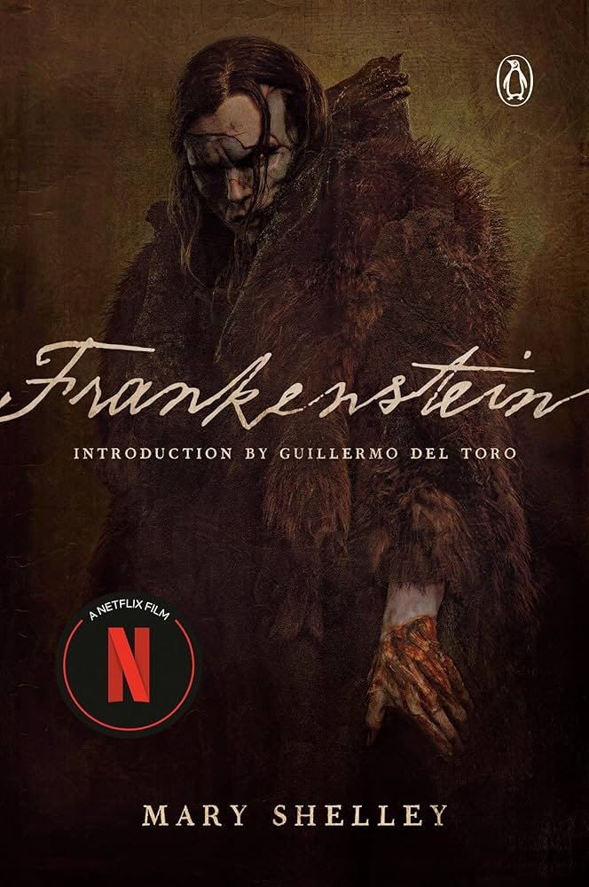
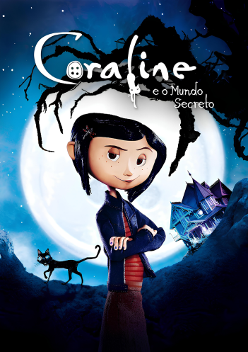

SUGESTÕES DE FILMES PARA VOCÊ
Frankenstein (2025)- Netflix

Sinopse do filme:
O filme Frankenstein (2025), dirigido por Guillermo del Toro na Netflix, é uma adaptação do clássico de Mary Shelley. A trama acompanha o brilhante e egocêntrico cientista Victor Frankenstein (Oscar Isaac), que, obcecado em dar vida a matéria morta, cria uma criatura (Jacob Elordi), resultando em tragédia, vingança e dilemas existenciais.
Informações adicionais:
O filme estreou em 7 de novembro de 2025 e foi vencedor do Oscas nas categorias de Melhor Maquiagem e Penteado, Melhor Design de Produção e Melhor Figurino.
O jogo da imitação (2014) - Black Bear Picture e Bristol Automotive

Sinopse do filme:
Em 1939, a recém-criada agência de inteligência britânica MI6 recruta Alan Turing, um aluno da Universidade de Cambridge, para entender códigos nazistas, incluindo o "Enigma", que criptógrafos acreditavam ser inquebrável. A equipe de Turing, incluindo Joan Clarke, analisa as mensagens de "Enigma", enquanto ele constrói uma máquina para decifrá-las. Após desvendar as codificações, Turing se torna herói. Porém, em 1952, autoridades revelam sua homossexualidade, e a vida dele vira um pesadelo.
Informações adicionais:
"O Jogo da Imitação" (2014) é um drama biográfico focado na vida do matemático britânico Alan Turing (interpretado por Benedict Cumberbatch) durante a Segunda Guerra Mundial. O filme narra os esforços de Turing e sua equipe para decifrar a máquina Enigma, usada pelos nazistas para comunicações secretas.
Coraline e o Mundo Secreto (2009) - LAIKA Studios

width="300Spx">Sinopse do filme:
Coraline descobre uma porta para um mundo alternativo onde tudo parece perfeito, pais afetuosos e desejos realizados. Porém, todos têm botões nos olhos, e logo percebe que essa realidade paralela esconde intenções sombrias para mantê-la presa.
Informações adicionais:
filme levou mais de quatro anos para ser concluído e foram criadas 15.000 expressões faciais intercambiáveis apenas para a boneca da Coraline. O filme foi o primeiro longa-metragem lançado pela Focus Features produzido pelo estúdio Laika, conhecido por seu trabalho meticuloso em stop-motion.